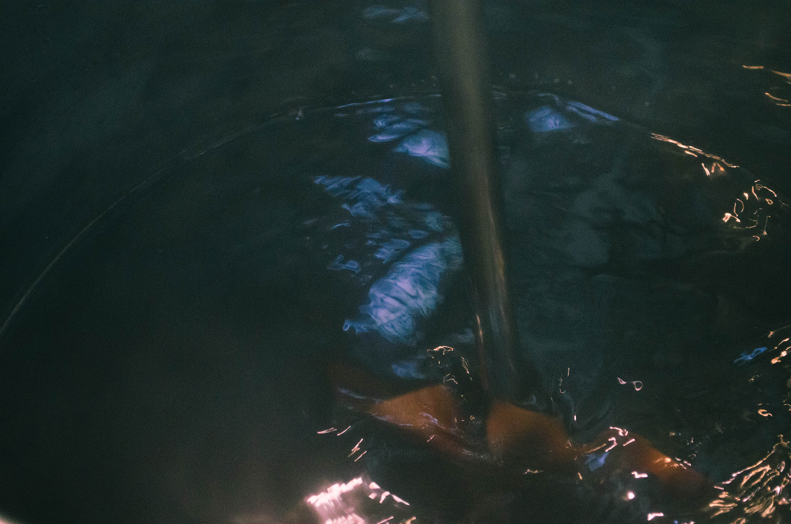
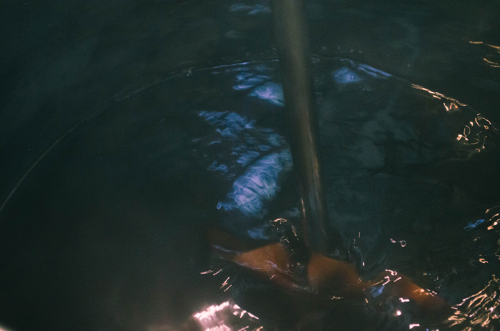

染め・絞り・シルクスクリーンといったテキスタイルデザインの制作過程や作業風景を紹介します。作品ができあがるまでの過程をお楽しみください。 / movie photo：nanami furuta

 


 染め
染め染料を使って自分の染めたい色に布を染めていきます。野菜の皮や植物を使って染めることもできます。なかにはテーマに合わせてグラデーションの表現をしている子も。


 絞り
絞り染めの際に布の一部をしばることで様々な模様をだすことができます。写真にあるのは“輪っか絞り”といって、ビー玉を布でくくって染めることできれいな輪っかの模様をつくっています。


 シルクスクリーン
シルクスクリーン版を使って、自分の制作したデザインを布にのせていきます。ひとつのデザインに対し３,４版使うことで色を徐々に重ねている子もいました。